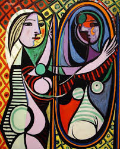

Pablo Picasso (Full Name: pablo DiEgo joSé franCisco dE paula juan Nepomuceno maría De los remedios cipriano de la santísima trinidad ruiz y picasso) will become
2. some guy who looks like he's in pAin facing the right
1. a few ghouls beating up a dragon or soMething
7. a girl sTaring at her reflection looking sad
3. sad man plays His guitar depressingly
4. a girl and some animals dancing to some flute Jams
6. actually a good painting of a gIrl
5. Person whose face is actually two faces